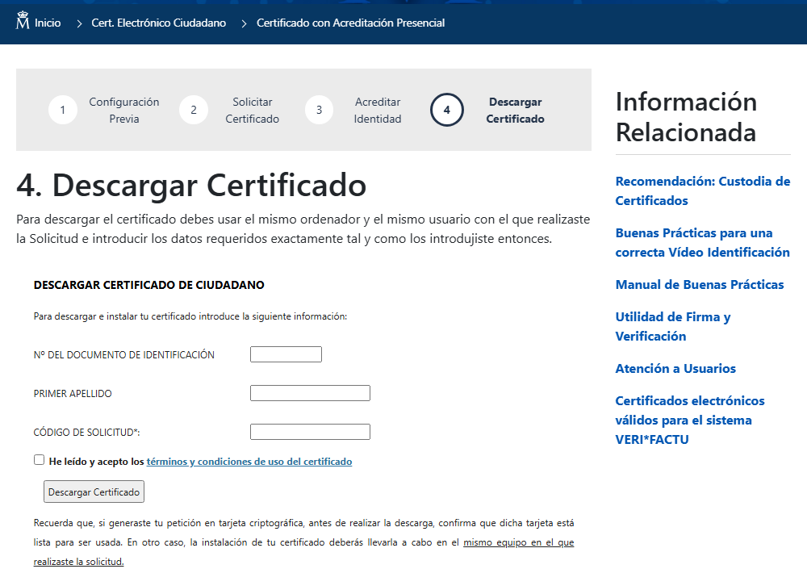

Paso 4: descargar el certificado y hacer copia de seguridad
Descargarás (conceptualmente) tu certificado y aprenderás por qué es imprescindible hacer una copia de seguridad nada más obtenerlo.
Paso 4: descargar el certificado y hacer copia de seguridad
Vuelve al mismo ordenador y al mismo navegador
Pasada aproximadamente una hora desde que acreditaste tu identidad, entra de nuevo en sede.fnmt.gob.es, en el apartado de descarga, desde el mismo equipo y el mismo navegador que usaste para solicitar el certificado. Ahí es donde quedó generada tu clave privada.

El formulario de descarga real pide tu documento de identificación, tu primer apellido y el Código de Solicitud.
Captura real de sede.fnmt.gob.es (23/09/2026). El aspecto de la web puede cambiar con el tiempo.
- Introduce tu documento de identificación, tu primer apellido y el Código de Solicitud recibido por correo.
- Marca la casilla de aceptación de los términos y condiciones de uso del certificado, y pulsa Descargar Certificado.
- En algún momento de este paso se te pedirá también la contraseña que creaste al solicitar el certificado (paso 2).
- El certificado se genera y se instala automáticamente en el almacén de certificados de tu navegador (o del sistema, según el navegador).
- Comprueba que aparece: en la mayoría de navegadores puedes verlo en sus opciones de privacidad/seguridad, en «Gestionar certificados».
Haz la copia de seguridad de inmediato
Un certificado instalado en el navegador vive, en el fondo, dentro del sistema operativo. Si formateas el ordenador, lo cambias, o el navegador tiene un problema, puedes perder tu certificado para siempre y no hay forma de «volver a descargarlo»: habría que solicitar uno nuevo entero.
Cómo se exporta (idea general)
Los pasos exactos cambian algo según el navegador y su versión, pero la idea es siempre la misma: entras en el gestor de certificados de tu navegador o de tu sistema operativo, buscas tu certificado (verás tu nombre y el emisor «AC FNMT Usuarios»), y eliges exportar, incluyendo la clave privada.
- 📁 El archivo exportado suele tener extensión
.pfxo.p12. Contiene tu clave privada, así que hay que protegerlo con una contraseña de exportación (distinta de la del paso 2, puedes elegir la que quieras en ese momento). - 💾 Guarda ese archivo en un lugar seguro: un disco externo, un gestor de contraseñas o una nube cifrada. Nunca lo envíes por correo sin cifrar ni lo dejes en un ordenador compartido.
- 🖥️ En Windows, el gestor de certificados se abre escribiendo
certmgr.msc; en Firefox está en Ajustes → Privacidad y seguridad → Certificados; en Chrome/Edge, en Configuración → Privacidad y seguridad → Seguridad → Gestionar certificados.
.pfx y su contraseña podrás reinstalar el certificado en el mismo equipo tras formatearlo, o usarlo en otro dispositivo: es justo lo que veremos en el próximo módulo.🧩 Antes de nada
Nada más descargar el certificado, ¿cuál es la recomendación más importante?
🧩 El archivo exportado
Al exportar tu certificado con su clave privada, ¿qué debes hacer para protegerlo?